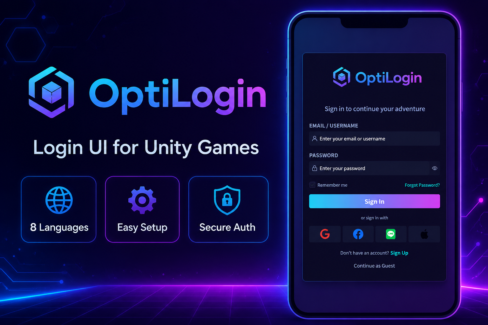
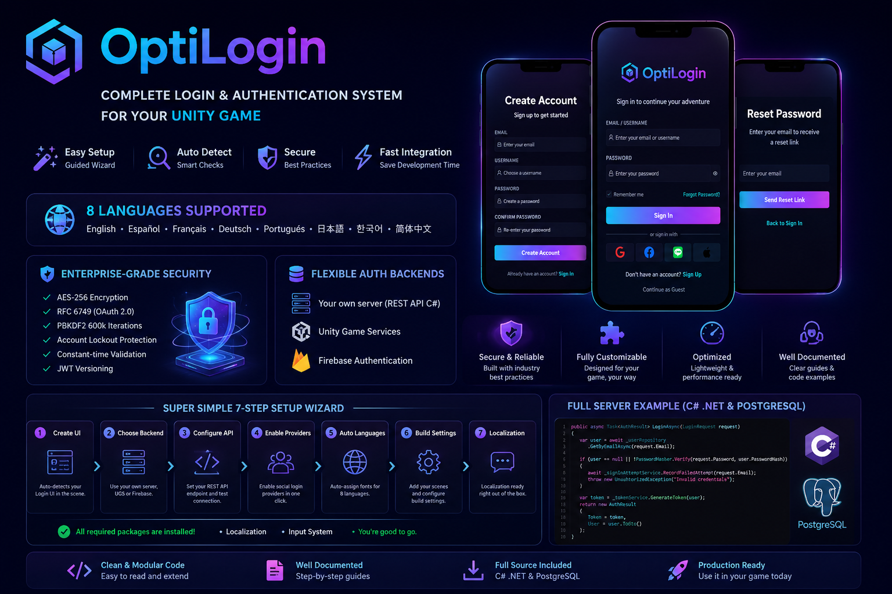
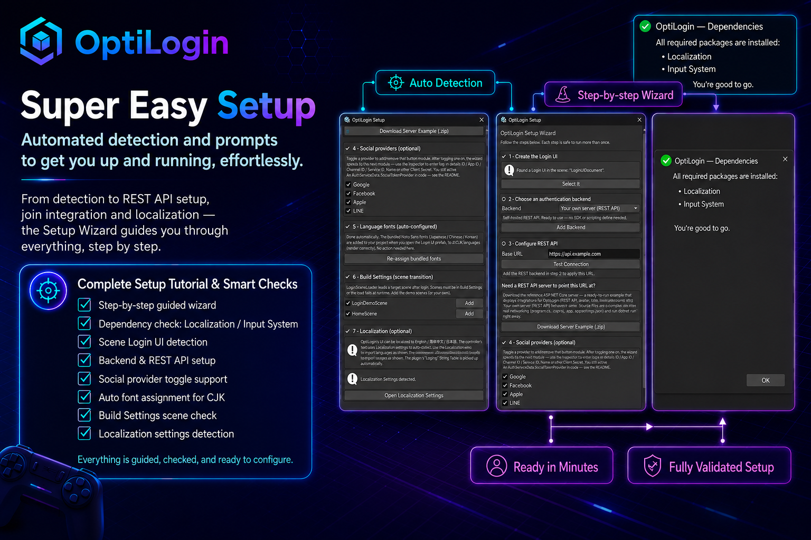
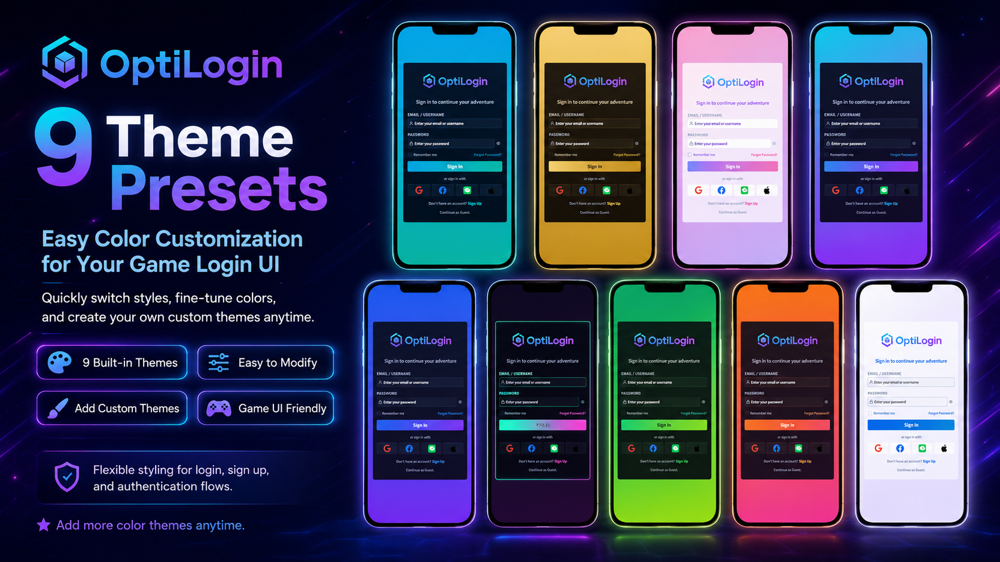
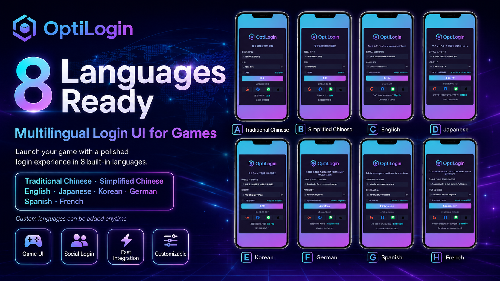

Complete Login UI
完整登入 UI
Login, sign up, forgot password, remember me, guest sign-in, status messages, loading feedback, and social provider buttons.
包含登入、註冊、忘記密碼、記住我、訪客登入、狀態訊息、讀取回饋與社群登入按鈕。
Launch your Unity game with a polished, multilingual login experience and flexible authentication backends.
為 Unity 遊戲快速建立精緻、多語系、可接不同後端的登入體驗。
OptiLogin combines a production-minded UI Toolkit login flow with guided setup, social provider buttons, theme presets, localization, session handling, and pluggable REST API, Unity Gaming Services, or Firebase authentication.
OptiLogin 將 UI Toolkit 登入流程、設定精靈、社群登入按鈕、主題預設、多語系、Session 管理，以及 REST API、Unity Gaming Services 或 Firebase 驗證整合在同一套可量產的 Unity 套件中。

OptiLogin is designed for game teams that need a professional account entry point without rebuilding login, validation, localization, and backend wiring every project.
OptiLogin 適合需要專業帳號入口的遊戲團隊，免去每個專案重做登入、驗證、多語系與後端串接的重複工作。
Login, sign up, forgot password, remember me, guest sign-in, status messages, loading feedback, and social provider buttons.
包含登入、註冊、忘記密碼、記住我、訪客登入、狀態訊息、讀取回饋與社群登入按鈕。
Editor tooling checks dependencies, detects the login scene, adds backends, configures providers, assigns fonts, and validates build settings.
Editor 工具會檢查相依套件、偵測登入場景、加入後端、設定登入供應商、指定字型並驗證建置設定。
Use your own REST API, Unity Gaming Services, or Firebase Authentication while keeping the same UI and event model.
可使用自建 REST API、Unity Gaming Services 或 Firebase Authentication，同時維持相同 UI 與事件模型。
Swap the full look through LoginTheme ScriptableObjects, with neon, minimal, dark, bright, and game-friendly presets included.
透過 LoginTheme ScriptableObject 切換整體視覺，內建霓虹、極簡、深色、明亮等適合遊戲的主題。
Ships with 8 languages and Unity Localization integration, including CJK-ready font assignment for global game launches.
內建 8 種語言並整合 Unity Localization，也支援中日韓字型指派，適合全球發行。
Includes session persistence, token refresh, guest upgrade, account deletion hooks, server contract docs, and a C# server example.
包含 Session 保存、Token 更新、訪客升級、帳號刪除掛鉤、伺服器契約文件與 C# 伺服器範例。

The package includes UI assets, scripts, demo scenes, setup tools, server-facing API contracts, and documentation so buyers can integrate the login experience into a real Unity project.
套件包含 UI 素材、腳本、示範場景、設定工具、伺服器 API 契約與文件，方便買家整合到實際 Unity 專案。
The Setup Wizard guides developers from scene creation to REST API configuration and localization readiness. Dependency checks catch missing Localization or Input System packages before they become compile-time surprises.
設定精靈會引導開發者完成場景建立、REST API 設定與多語系準備。相依套件檢查也會提前找出缺少的 Localization 或 Input System，避免編譯時才發現問題。

OptiLogin ships with 9 built-in themes and a theme asset workflow that makes it simple to tune colors, gradients, borders, backgrounds, and provider icons.
OptiLogin 內建 9 組主題，並提供主題資產流程，可調整色彩、漸層、邊框、背景與登入供應商 icon。


All visible login text is driven by Unity Localization and can update live when the active locale changes. Traditional Chinese, Simplified Chinese, English, Japanese, Korean, German, Spanish, and French are included.
所有登入文字皆由 Unity Localization 驅動，切換語系時可即時更新。內建繁體中文、簡體中文、英文、日文、韓文、德文、西班牙文與法文。
The shared backend base class wires UI events to validation, async auth operations, status feedback, session persistence, and post-login UnityEvents. Concrete backends only implement the service-specific calls.
共用後端基底類別會把 UI 事件接到驗證、非同步登入流程、狀態回饋、Session 保存與登入後 UnityEvent；具體後端只需實作各服務的呼叫。
// Route successful login into your game auth.OnAuthenticated.AddListener((userId, displayName) => { SaveSystem.Load($"save_{userId}"); SceneManager.LoadScene("HomeScene"); }); // Guest upgrade keeps the same userId auth.OnAccountUpgraded.AddListener((userId, displayName) => { ProfileUI.Refresh(userId, displayName); });
OptiLogin includes integration guidance for player saves, guest upgrades, logout-all, account deletion, token refresh, device binding, REST contracts, OpenAPI, and a runnable ASP.NET Core server example.
OptiLogin 包含玩家存檔、訪客升級、全裝置登出、帳號刪除、Token 更新、裝置綁定、REST 契約、OpenAPI，以及可執行 ASP.NET Core 伺服器範例的整合指引。
Clear JSON endpoint contracts for REST authentication, including success and failure shapes.
提供清楚的 REST 驗證 JSON 端點契約，包含成功與失敗格式。
Guidance for HTTPS, password hashing, rate limiting, refresh-token rotation, and social token verification.
涵蓋 HTTPS、密碼雜湊、速率限制、Refresh Token 輪替與社群 Token 驗證建議。
iOS and Android notes for account deletion, privacy manifest, Sign in with Apple, and deep-link setup.
包含 iOS 與 Android 的帳號刪除、隱私權 manifest、Apple 登入與 deep link 設定注意事項。
Use OptiLogin to move faster from prototype to release-ready account flows, while keeping your backend choices flexible and your game UI fully brandable.
用 OptiLogin 更快把原型推進到可上線的帳號流程，同時保留彈性的後端選擇與可品牌化的遊戲 UI。